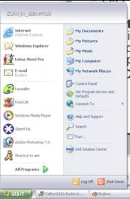

The
Start Menu
nAnything you need to
access in Windows you can get at
through the Start Menu.
nAll Programs will take you to any Programs you wish to run (like AOL, Notepad, Word)
nControl Panel will let you change your settings in Windows. Here you can change your printer setup, your mouse settings, what language the computer is in, etc...
nMy Computer will let you see what stuff is in your computer.
